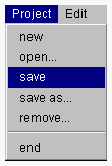

プロジェクトを保存する
プロジェクトマネージャは複数のプロジェクトを管理することができ、利用者はプロジェクトを切り替えながら作業を行うことができます。また、プロジェクトを保存しておくと、OZ
IDE を再起動したときに保存された状態から作業を継続することができます。現状ではプロジェクトマネージャが正常終了したときにはプロジェクトがすべて保存されます。また、作業継続中であっても、Project
メニューのsave メニュー項目によってすべてのプロジェクトの作業状態を保存することができます。

- １．プロジェクトマネージャの Project メニューから save メニュー項目を選択してください。

- 注意）
保存されるのはプロジェクトマネージャのカレント状態です。作成されたプロジェクトとそれに対応するプロジェクトディレクトリを保存しますが、プロジェクトディレクトリに含まれるファイルを保存するわけではありません。
(c) 1996-1998 IPA, ETL, AT21, FSIABC, FXIS,
InArc, MRI, NUL, SBC, Sharp, TEC, TIS. All rights reserved.